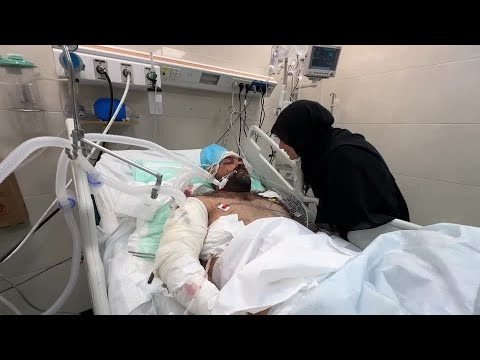

【父亲住院，九名儿童在以色列对加沙的空袭中丧生 | 路透社】
Summary: Tahani Yakya al-Najar visits her injured brother in the hospital after an Israeli airstrike killed nine of his children, leaving him and one surviving child severely wounded, while the family grapples with unimaginable loss and destruction.
摘要： 塔哈尼·雅基亚·纳贾尔在医院探望受伤的兄弟，此前以色列空袭导致他的九名孩子丧生，他和一名幸存的孩子身受重伤，整个家庭陷入难以想象的悲痛与毁灭之中。

⏱️ Estimated Reading Time: 4 min
Tahani Yakya al- Najar visits her brother in his conun intensive care hospital room on Sunday, willing him to wake up.
塔哈尼·雅基亚·纳贾尔周日来到重症监护病房探望她的兄弟，祈祷他醒来。
You are okay.
你会没事的。
This will pass, she tells him.
这一切都会过去的，她对他说。
Hamdi al- Najar was at his home with his 10 children when an Israeli air strike hit over the weekend.
哈姆迪·纳贾尔周末时正和他的10个孩子待在家里，这时以色列发动了空袭。
Nine of his children died.
他的九个孩子丧生。
Hamdi who is a doctor and his only surviving child were rushed to the nearby Nasser hospital in southern Gaza where he is being treated for his injuries.
哈姆迪是一名医生，他和唯一幸存的孩子被紧急送往加沙南部的纳赛尔医院，他在那里接受治疗。
His wife Allah al- Najar also a doctor was not at home at the time of the strike.
他的妻子阿拉·纳贾尔也是一名医生，空袭发生时不在家。
Hamdi's sister Tahani describes the aftermath.
哈姆迪的妹妹塔哈尼描述了空袭后的场景。
The area was full of smoke and the bombing was very intense.
整个区域浓烟弥漫，轰炸非常猛烈。
So I found my entire family's house collapsed.
我发现我们家的房子完全倒塌了。
My house is on the street behind them and they are on the main road.
我的房子在他们后面的街上，而他们在主路上。
I started asking where is Hamdi?
我开始问哈姆迪在哪里？
Where are Hamdi's children?
哈姆迪的孩子们在哪里？
My other brother was coming to get me.
我的另一个兄弟来接我。
So Hamdi's wife told me that her children had died.
哈姆迪的妻子告诉我，她的孩子们都死了。
I couldn't bear to hear what she was saying nor did I comprehend what was happening to us because we were in a state of extreme fear and panic.
我无法忍受她所说的话，也无法理解发生在我们身上的事，因为我们处于极度的恐惧和恐慌之中。
It is indescribable.
这难以形容。
Praise be to God.
感谢上帝。
Hamdi has undergone two operations to stop bleeding in his abdomen and chest and is also being treated for head injuries and other wounds.
哈姆迪已经接受了两次手术以止住腹部和胸部的出血，同时还在接受头部和其他伤口的治疗。
His doctor said the Israeli military has confirmed it conducted an air strike on conun on Friday and said it was targeting suspects in a structure that was close to Israeli soldiers.
他的医生表示，以色列军方已确认周五对康恩发动了空袭，并称目标是靠近以色列士兵的建筑内的嫌疑人。
The military is looking into claims that quote uninvolved civilians were killed, it said, adding that the military had evacuated civilians from the area before the operation began.
军方表示正在调查有关“无关平民被杀”的说法，并补充说军方在行动开始前已疏散了该地区的平民。
According to medical officials in Gaza, the nine children were aged between 1 and 12 years old.
据加沙医疗官员称，九名儿童的年龄在1至12岁之间。
The surviving child, a boy, is in a serious but stable condition.
幸存的孩子是一名男孩，情况严重但稳定。
The hospital said Israel launched an air and ground war in Gaza after Hamas militants crossed attack on October 7th 2023 which killed 1200 people by Israeli and 251 hostages were abducted into Gaza.
医院表示，以色列在哈马斯武装分子于2023年10月7日发动袭击后对加沙发动了空袭和地面战争，袭击造成1200名以色列人死亡，251名人质被劫持到加沙。
The conflict has killed more than 53,900 Palestinians according to Gaza health authorities and devastated the coastal strip.
据加沙卫生部门称，冲突已造成超过53,900名巴勒斯坦人死亡，并摧毁了这片沿海地带。
Practically all of Gaza's more than two million Palestinians have been displaced after more than 20 months of war.
经过20多个月的战争，加沙超过200万巴勒斯坦人几乎全部流离失所。
Tahani says there is no safe space left for her family to seek refuge.
塔哈尼表示，她的家人已无处可逃。
The death, separation, and destruction.
死亡、分离和毁灭。
I lived in my family's house.
我曾住在我们家的房子里。
My memories, my whole life is gone.
我的回忆，我的一生都消失了。
They wouldn't do to the targeted people what they did to Hamdi.
他们不会对目标人物做出像对哈姆迪那样的事。
Seriously, if you saw the place on the first day, I felt like I wasn't conscious.
说真的，如果你第一天看到那个地方，我感觉自己失去了意识。
I wanted someone to hit me in the head so I would wake up because what I was seeing wasn't real.
我希望有人打我的头让我醒来，因为我看到的一切都不真实。